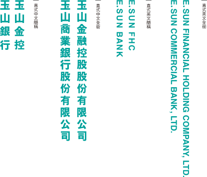

- 企業識別
- 數位品牌e.Fingo
- 吉祥物
- 社群
- ATM
Basic System
- 基本要素
- 企業標誌
- 企業標準字
- 企業色彩系統
- 企業標誌組合規範
- 企業使用字體
- 企業標語
- 輔助圖形
-
1-1 標誌、標準字、色彩透過基本系統可以瞭解所有構成企業視覺印象的設計要素，並透過規範瞭解這些元素的使用方式。
-
1-2-1 企業標誌演化過程企業標誌在視覺設計要素中，應用最廣泛且出現頻率最高。所以無論任何情況下，均不得改變其圖形，包括色彩、角度、比例、圓弧、大小、粗細等，以保持標誌之標準造型。1-2-2 企業標誌標準化規格企業標誌在視覺設計要素中，應用最廣泛，出現頻率最高。所以無論任何情況下，均不得改變其圖形，包括色彩、角度、比例、圓弧、大小、粗細等，以保持標誌之標準造型，黃線標註表示山形左右端點並非在同一水平線，橘線標註各端點之比例距離。
-
1-3-1 中、英文簡稱/全銜標準字(直式)企業標準字的設計乃根據企業風格欲塑造形象而創作，故其使用標準與企業標誌相同。
不得任意改變其造型、粗細、角度、特徵及配置關係。
企業標準字講求端莊穩重且別具清新的現代感，使用時應注意其高度不得低於5mm，排列務必注意整齊水平及間隔距離，再生或放大時應完全遵循企業標準字標準使用。
為呈現與中文字體一致的清新穩健風格，英文標準字乃採用粗黑體之字體。
使用標準與中文相同，不得任意更換字體。1-3-1 中、英文簡稱/全銜標準字企業標準字的設計乃根據企業風格欲塑造形象而創作，故其使用標準與企業標誌相同。不得任意改變其造型、粗細、角度、特徵及配置關係。
企業標準字講求端莊穩重且別具清新的現代感，使用時應注意其高度不得低於5mm，排列務必注意整齊水平及間隔距離，再生或放大時應完全遵循企業標準字標準使用。
為呈現與中文字體一致的清新穩健風格，英文標準字乃採用粗黑體之字體。 使用標準與中文相同，不得任意更換字體。 -
1-4-1 企業標準色彩企業主色為融合藍天與綠地的特別色，象徵著親和力。藍天代表澄淨清澈，象徵智慧、穩健和值得信賴；綠地代表大自然，象徵朝氣與活力。企業主色應用濃度比例以80%、60%、40%、20%為原則。
為配合企業整體形象，請以「標準顏色」搭配「輔助顏色」為主要設計考量。 -
1-5-1 標誌與中文標準字組合因應不同場合、不同媒體之需要，標誌與標準字需有不同組合以供運用。為避免濫用及錯誤使用，標誌及標準字之位置、距離、大小、角度等，均需依規範運用。1-5-2 標誌與英文標準字組合因應不同場合、不同媒體之需要，標誌與標準字需有不同組合以供運用。為避免濫用及錯誤使用，標誌及標準字之位置、距離、大小、角度等，均需依規範運用。1-5-3 中、英文標準字組合因應不同場合、不同媒體之需要，標誌與標準字需有不同組合以供運用。為避免濫用及錯誤使用，標誌及標準字之位置、距離、大小、角度等，均需依規範運用。1-5-3 中、英文標準字組合因應不同場合、不同媒體之需要，標誌與標準字需有不同組合以供運用。為避免濫用及錯誤使用，標誌及標準字之位置、距離、大小、角度等，均需依規範運用。1-5-4 中、英文標準字組合因應不同場合、不同媒體之需要，標誌與標準字需有不同組合以供運用。為避免濫用及錯誤使用，標誌及標準字之位置、距離、大小、角度等，均需依規範運用。1-5-5 留白使用規範為了確保企業標誌辨識度，企業標誌與其他元素間須維持在0.5X以上的空間距離，請勿讓任何其他圖形元素到留白範圍內。以「玉山金控」這組為例，其他排法亦同。1-5-6 最小比例使用規範為了讓品牌視覺形象在任何狀況下都能夠清楚被辨識，維護標誌呈現應有的清晰度非常重要。針對不同的媒體，標誌使用的尺寸也有不同的規範。右方所示為標誌在A4尺寸下最小使用尺寸，大部分狀況下都不應該小於標示的尺寸。1-5-7 反白使用規範務必視底色情況使用，且需等比例縮放整個組合，不得擅自更改元素大小、字元排列。
-
1-6 主要與次要字型華康黑體為中文的主要打字體，使用於廣告傳播文宣及其他製作物的標題及內文或文件、指標等訊息。
-
1-7 企業標語使用規範企業標語規格化以「清」字字高為X值，框選出來的範圍，切半第一個墨圈；第二個墨圈對齊右下角。
-
1-8 企業輔助圖形使用規範適當的運用輔助圖形可以豐富品牌視覺的表現及強化品牌的個性。